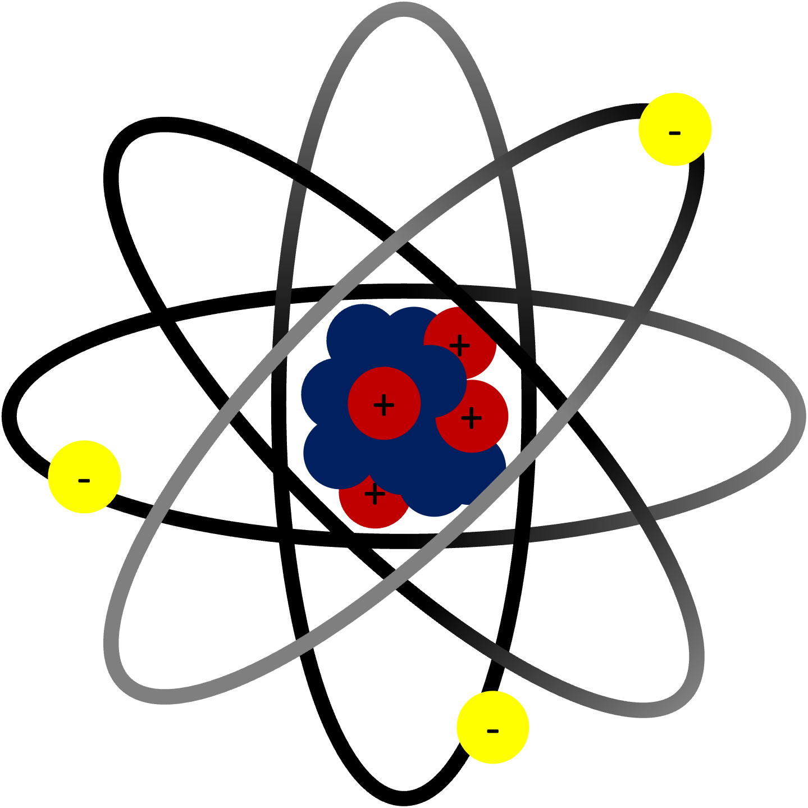

|

Basic Diagram of Atom |
Thomphson discovered the Electron. The first Sub-Atomic particle to be discovered Model Atom structures. Mass Spectrograph. A spectrograph — sometimes called a spectroscope or spectrometer — breaks the light from a single material into its component colors the way a prism splits white light into a rainbow. It records this spectrum, which allows scientists to analyze the light and discover properties of the material interacting with it.30 Sept 2022 Hubble Cathode rays or electron beams (e-beam) are streams of electrons observed in discharge tubes. If an evacuated glass tube is equipped with two electrodes and a voltage is applied, glass behind the positive electrode is observed to glow, due to electrons emitted from the cathode (the electrode connected to the negative terminal of the voltage supply). They were first observed in 1859 by German physicist Julius Plücker and Johann Wilhelm Hittorf,[1] and were named in 1876 by Eugen Goldstein Kathodenstrahlen, or cathode rays.[2][3] In 1897, British physicist J. J. Thomson showed that cathode rays were composed of a previously unknown negatively charged particle, which was later named the electron. Cathode-ray tubes (CRTs) use a focused beam of electrons deflected by electric or magnetic fields to render an image on a screen. He used Cathode Ray tubes for it. This relates to statements above. Look at the bottom :) Thomson was awarded the 1906 Nobel Prize in Physics for his work on the conduction of electricity in gases. Thomson was also a teacher, and seven of his students went on to win Nobel Prizes: Ernest Rutherford (Chemistry 1908), Lawrence Bragg (Physics 1915), Charles Barkla (Physics 1917), Francis Aston (Chemistry 1922), Charles Thomson Rees Wilson (Physics 1927), Owen Richardson (Physics 1928) and Edward Victor Appleton (Physics 1947).[5] Only Arnold Sommerfeld's record of mentorship offers a comparable list of high-achieving students. "In recognition of the great merits of his theoretical and experimental investigations on the conduction of electricity by gases." Cambridge Uni On 22 December 1884, Thomson was appointed Cavendish Professor of Physics at the University of Cambridge.[2] The appointment caused considerable surprise, given that candidates such as Osborne Reynolds or Richard Glazebrook were older and more experienced in laboratory work. Thomson was known for his work as a mathematician, where he was recognised as an exceptional talent.[18] Talking about Rutherford, from above – also discovered Rutherfordium, the longest element (14 letters) element 104. They were very good colleagues too. |